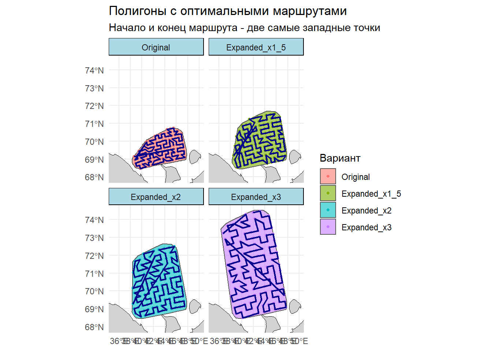

# ========================================================================================================================
# ПРАКТИЧЕСКОЕ ЗАНЯТИЕ: ПЛАНИРОВАНИЕ МАРШРУТА СЪЕМКИ ПРИ ОГРАНИЧЕННОМ ВРЕМЕННОМ РЕСУРСЕ
# Курс: "Современные методы анализа данных в оценке водных биоресурсов"
# Автор: Баканев С.В.
# Дата: 24.04.2025
#
# Цель: Освоить методы геопространственного анализа и оптимизации для планирования научно-исследовательских съемок
#
# Структура:
# 1. Загрузка пакетов и настройка среды
# 2. Загрузка и подготовка исходных данных
# 3. Создание расширенных полигонов
# 4. Генерация схемы станций
# 5. Построение оптимальных маршрутов
# 6. Визуализация результатов
# 7. Сравнительный анализ и экспорт результатов
#
# Описание: Скрипт демонстрирует подход к планированию морских исследований с использованием
# методов пространственного анализа и решения задачи коммивояжера (TSP).
# Моделируются различные сценарии расширения района работ с оценкой
# их влияния на протяженность маршрута.
# ========================================================================================================================
# ЗАГРУЗКА НЕОБХОДИМЫХ ПАКЕТОВ -----------------------------------------------
# Все пакеты должны быть предварительно установлены (install.packages(...))
library(sf) # Базовые операции с пространственными данными (вектор)Linking to GEOS 3.13.1, GDAL 3.11.0, PROJ 9.6.0; sf_use_s2() is TRUElibrary(tidyverse) # Метасборка пакетов для обработки и визуализации данных-- Attaching core tidyverse packages ------------------------ tidyverse 2.0.0 --
v dplyr 1.1.4 v readr 2.1.5
v forcats 1.0.0 v stringr 1.5.2
v ggplot2 4.0.0 v tibble 3.2.1
v lubridate 1.9.4 v tidyr 1.3.1
v purrr 1.0.4 -- Conflicts ------------------------------------------ tidyverse_conflicts() --
x dplyr::filter() masks stats::filter()
x dplyr::lag() masks stats::lag()
i Use the conflicted package (<http://conflicted.r-lib.org/>) to force all conflicts to become errorslibrary(rnaturalearth) # Загрузка готовых полигональных карт мира (для фона)
library(ggplot2) # Создание продвинутых графиков (входит в tidyverse, но подключаем для ясности)
library(geosphere) # Геодезические расчеты на сфере (расчет расстояний между точками)
library(TSP) # Решение "Задачи коммивояжера" (Traveling Salesman Problem)
# 1. НАСТРОЙКА СРЕДЫ ----------------------------------------------------------
# Установка рабочей директории (замените на путь к своей папке)
setwd("C:/SURVEY/")
# 2. ЗАГРУЗКА ИСХОДНЫХ ДАННЫХ -------------------------------------------------
# Загрузка предварительно созданного файла с полигонами
load("polygons.RData")
# Фильтрация полигона за 2020 год и извлечение его геометрии
polygon_2020 <- polygons %>%
filter(YEAR == 2020) %>%
st_geometry()
# 3. ПРЕОБРАЗОВАНИЕ СИСТЕМЫ КООРДИНАТ -----------------------------------------
# Преобразование из географических координат (WGS84) в проекцию UTM (зона 40N).
# Это необходимо для корректного вычисления площадей и расстояний в метрах.
polygon_2020_utm <- st_transform(polygon_2020, 32640)
# 4. РАСЧЕТ ПЛОЩАДИ ИСХОДНОГО ПОЛИГОНА ----------------------------------------
# Вычисление площади в кв. метрах (st_area) и конвертация в кв. километры (/ 1e6)
area_km2_original <- (st_area(polygon_2020_utm) / 1e6) %>% as.numeric()
# Вывод результата в консоль
cat("Площадь полигона 2020 года: ", round(area_km2_original, 2), " км²\n")Площадь полигона 2020 года: 63101.31 км<U+00B2># 5. ФУНКЦИЯ ДЛЯ ЭКСПАНСИИ ПОЛИГОНА НА СЕВЕР -----------------------------------
# Создание функции, которая "растягивает" северную часть полигона на заданный множитель.
# Аргументы:
# poly - исходный полигон (в UTM)
# factor - коэффициент расширения (например, 1.5 - увеличить на 50%)
expand_polygon_north <- function(poly, factor) {
# Извлечение координат вершин полигона и преобразование в DataFrame
coords <- st_coordinates(poly)[, 1:2] %>%
as.data.frame() %>%
rename(x = X, y = Y)
# ЛОГИКА РАСШИРЕНИЯ:
# 1. Определяем "северную" часть полигона (верхние 30% точек по оси Y)
north_threshold <- quantile(coords$y, 0.7)
# 2. Находим общий разброс полигона по оси Y (высоту)
y_range <- diff(range(coords$y))
# 3. Сдвигаем все северные точки на север на величину (factor - 1) * высоту_полигона
coords[coords$y >= north_threshold, "y"] <-
coords[coords$y >= north_threshold, "y"] + y_range * (factor - 1)
# Создание нового полигона из модифицированных точек:
# 1. Преобразование точек в spatial object
# 2. Объединение точек в один объект
# 3. Построение выпуклой оболочки для получения гладкого полигона
expanded_poly <- st_as_sf(coords, coords = c("x", "y"), crs = st_crs(poly)) %>%
st_combine() %>%
st_convex_hull()
return(expanded_poly)
}
# 6. СОЗДАНИЕ НАБОРА ЭКСПАНДИРОВАННЫХ ПОЛИГОНОВ -------------------------------
# Применение функции к коэффициентам 1.5, 2 и 3
factors <- c(1.5, 2, 3)
expanded_polygons <- map(factors, ~ expand_polygon_north(polygon_2020_utm, .x))
# 7. РАСЧЕТ ПЛОЩАДЕЙ НОВЫХ ПОЛИГОНОВ ------------------------------------------
areas_expanded <- map_dbl(expanded_polygons, ~ {
(st_area(.x) / 1e6) %>% as.numeric() # Площадь в кв. км.
})
# 8. ФОРМИРОВАНИЕ ЕДИНОЙ ТАБЛИЦЫ С ВСЕМИ ПОЛИГОНАМИ ---------------------------
# Создание именованного списка всех полигонов
all_polygons <- list(
Original = polygon_2020_utm,
Expanded_x1_5 = expanded_polygons[[1]],
Expanded_x2 = expanded_polygons[[2]],
Expanded_x3 = expanded_polygons[[3]]
)
# Вектор меток и площадей
labels <- c("Original", "Expanded_x1_5", "Expanded_x2", "Expanded_x3")
areas <- c(area_km2_original, areas_expanded)
# Комбинирование геометрий и создание итогового SF-объекта
geometry <- do.call(c, all_polygons) # Объединение геометрий в один вектор
polygon_df <- tibble(
label = factor(labels, levels = labels), # Метка как фактор для сохранения порядка
area_km2 = areas, # Площадь
geometry = st_sfc(geometry) # Геометрия
) %>%
st_as_sf() # Преобразование в пространственный объект
# 9. ГЕНЕРАЦИЯ СЕТКИ ТОЧЕК (СТАНЦИЙ) ВНУТРИ КАЖДОГО ПОЛИГОНА -----------------
# Генерация 137 точек по регулярной сетке внутри каждого полигона.
# Используется rowwise для применения функции к каждой строке-полигону.
sample_points <- polygon_df %>%
rowwise() %>%
mutate(points = list(st_sample(geometry, size = 137, type = "regular"))) %>%
ungroup()
# 10. СОЗДАНИЕ ЕДИНОЙ ТАБЛИЦЫ ВСЕХ ТОЧЕК --------------------------------------
# Преобразование вложенного списка точек в плоскую таблицу
points_list <- map2(sample_points$geometry, sample_points$label, ~ {
st_sample(.x, size = 137, type = "regular") %>% # Извлечение точек
st_as_sf() %>% # Конвертация в SF
mutate(label = .y) # Добавление метки полигона
})
# Объединение всех точек в один DataFrame
points_df <- do.call(rbind, points_list) %>%
rename(geometry = x) %>%
st_set_geometry("geometry") %>%
st_set_crs(st_crs(polygon_2020_utm)) # Важно: явно задаем систему координат
# 11. ПРЕОБРАЗОВАНИЕ В WGS84 ДЛЯ ВИЗУАЛИЗАЦИИ И РАСЧЕТОВ ----------------------
# Большинство картографических пакетов и функций расчета расстояний работают с WGS84
polygon_wgs84 <- st_transform(polygon_df, 4326) # WGS84 (широта/долгота)
points_wgs84 <- st_transform(points_df, 4326)
# 12. ЗАГРУЗКА ФОНОВОЙ КАРТЫ (ГРАНИЦЫ РОССИИ) ---------------------------------
russia <- ne_countries(scale = "medium", country = "Russia", returnclass = "sf") %>%
st_transform(4326) # Преобразование в WGS84
# 13. ВИЗУАЛИЗАЦИЯ: ПОЛИГОНЫ И ТОЧКИ ------------------------------------------
# Построение карты с фацетами (subplots) для каждого варианта полигона
ggplot() +
geom_sf(data = russia, fill = "lightgray", color = "black", linewidth = 0.3) + # Фон
geom_sf(data = polygon_wgs84, aes(fill = label), alpha = 0.6, color = "darkred", linewidth = 0.5) + # Полигоны
geom_sf(data = points_wgs84, aes(color = label), shape = 16, size = 1) + # Точки
facet_wrap(~ label, scales = "fixed") + # Фацеты по варианту полигона
coord_sf(xlim = c(35, 50), ylim = c(68, 75)) + # Обрезка карты до нужного региона
labs(
title = "Полигоны с разной площадью и траловыми станциями",
subtitle = "Регулярное распределение 137 точек внутри каждого полигона",
fill = "Вариант", color = "Вариант"
) +
theme_minimal() +
theme(strip.background = element_rect(fill = "lightblue"))# 14. ФУНКЦИЯ ДЛЯ ПОСТРОЕНИЯ ОПТИМАЛЬНОГО МАРШРУТА (TSP) ----------------------
# Создает маршрут, проходящий через все точки, с фиксацией начала и конца.
create_route <- function(points) {
# Извлечение координат (долгота, широта) из SF-объекта
coords <- st_coordinates(points)
# СТРАТЕГИЯ: Начало и конец маршрута - две самые западные точки.
# Это имитирует выход судна из порта и возврат в него.
west_points <- order(coords[,1])[1:2] # Индексы двух точек с min долготой
# Расчет матрицы расстояний между всеми точками (в метрах)
dist_matrix <- distm(coords, fun = distHaversine)
# СОЗДАНИЕ И НАСТРОЙКА ЗАДАЧИ KОММИВОЯЖЕРА (TSP):
tsp <- TSP(dist_matrix / 1000) # Создание объекта TSP (расстояния в км)
atsp <- as.ATSP(tsp) # Преобразование в Asymmetric TSP
# ФИКСАЦИЯ НАЧАЛА И КОНЦА:
# Обнуляем расстояния ДО стартовой точки -> она станет первой.
atsp[, west_points[1]] <- 0
# Обнуляем расстояния ОТ конечной точки -> она станет последней.
atsp[west_points[2], ] <- 0
# РЕШЕНИЕ TSP: метод "Ближайшая вставка" (быстрый, но не всегда оптимальный)
tour <- solve_TSP(atsp, method = "nearest_insertion")
# ФОРМИРОВАНИЕ ПОСЛЕДОВАТЕЛЬНОСТИ ТОЧЕК МАРШРУТА:
# Начало -> Маршрут -> Конец. unique() убирает возможные дубликаты.
ordered_indices <- c(west_points[1], as.integer(tour), west_points[2])
ordered_indices <- unique(ordered_indices)
return(ordered_indices)
}
# 15. ПОСТРОЕНИЕ МАРШРУТОВ ДЛЯ КАЖДОГО ПОЛИГОНА -------------------------------
# Применение функции create_route к каждой группе точек
routes <- points_wgs84 %>%
group_by(label) %>% # Группировка по варианту полигона
group_modify(~ {
ids <- create_route(.x) # Получение упорядоченного списка индексов точек
# Соединение точек в линию (маршрут)
route_line <- st_combine(.x$geometry[ids]) %>%
st_cast("LINESTRING") # Явное указание типа геометрии
tibble(geometry = st_sfc(route_line, crs = 4326)) # Возврат маршрута
}) %>%
st_as_sf() # Преобразование результата в SF-объект
# 16. ВИЗУАЛИЗАЦИЯ: ПОЛИГОНЫ, ТОЧКИ И МАРШРУТЫ --------------------------------
ggplot() +
geom_sf(data = russia, fill = "lightgray", color = "black", linewidth = 0.3) +
geom_sf(data = polygon_wgs84, aes(fill = label), alpha = 0.6, linewidth = 0.5) +
geom_sf(data = points_wgs84, aes(color = label), shape = 16, size = 1) +
geom_sf(data = routes, color = "darkblue", linewidth = 0.8) + # Маршруты
facet_wrap(~ label, scales = "fixed") +
coord_sf(xlim = c(35, 50), ylim = c(68, 74.5)) +
labs(
title = "Полигоны с оптимальными маршрутами",
subtitle = "Начало и конец маршрута - две самые западные точки",
fill = "Вариант", color = "Вариант"
) +
theme_minimal() +
theme(strip.background = element_rect(fill = "lightblue"))
# 17. СОХРАНЕНИЕ КАРТЫ В ФАЙЛ -------------------------------------------------
ggsave("polygon_with_optimal_routes.png", width = 12, height = 10, dpi = 300)
# 18. СОХРАНЕНИЕ ДАННЫХ МАРШРУТОВ (Ошибка: файл уже существует) ---------------
# st_write(routes, "optimal_routes.gpkg") # Раскомментируйте и используйте append=FALSE для перезаписи
# st_write(routes, "optimal_routes.gpkg", append=FALSE)
# 19. ФИНАЛЬНЫЙ СРАВНИТЕЛЬНЫЙ АНАЛИЗ ------------------------------------------
# Создание сводной таблицы с ключевыми метриками для каждого сценария
survey_summary <- routes %>%
# Добавление данных о площади из таблицы полигонов
left_join(st_drop_geometry(polygon_wgs84), by = "label") %>%
mutate(
`Количество тралений` = 137, # Константа по условию задачи
# Расчет длины маршрута: st_length(geometry) возвращает длину в метрах, делим на 1000 для перевода в км.
`Длина маршрута (км)` = round(as.numeric(st_length(geometry)) / 1000, 1),
`Площадь полигона (км2)` = round(area_km2, 1)
) %>%
select( # Выбор и переименование колонок для итоговой таблицы
Вариант = label,
`Количество тралений`,
`Длина маршрута (км)`,
`Площадь полигона (км2)`
)
# 20. ВЫВОД ИТОГОВОЙ ТАБЛИЦЫ В КОНСОЛЬ ----------------------------------------
cat("\nСводная статистика по вариантам:\n")
Сводная статистика по вариантам:print(survey_summary)Simple feature collection with 4 features and 4 fields
Geometry type: LINESTRING
Dimension: XY
Bounding box: xmin: 36.76157 ymin: 68.45049 xmax: 47.74796 ymax: 74.33784
Geodetic CRS: WGS 84
# A tibble: 4 x 5
# Groups: Вариант [4]
Вариант `Количество тралений` `Длина маршрута (км)` Площадь полигона (км~1
<fct> <dbl> <dbl> <dbl>
1 Original 137 3608. 63101.
2 Expanded_x~ 137 4691. 99791.
3 Expanded_x2 137 5153. 135352.
4 Expanded_x3 137 6111. 207066.
# i abbreviated name: 1: `Площадь полигона (км2)`
# i 1 more variable: geometry <LINESTRING [arc_degree]>